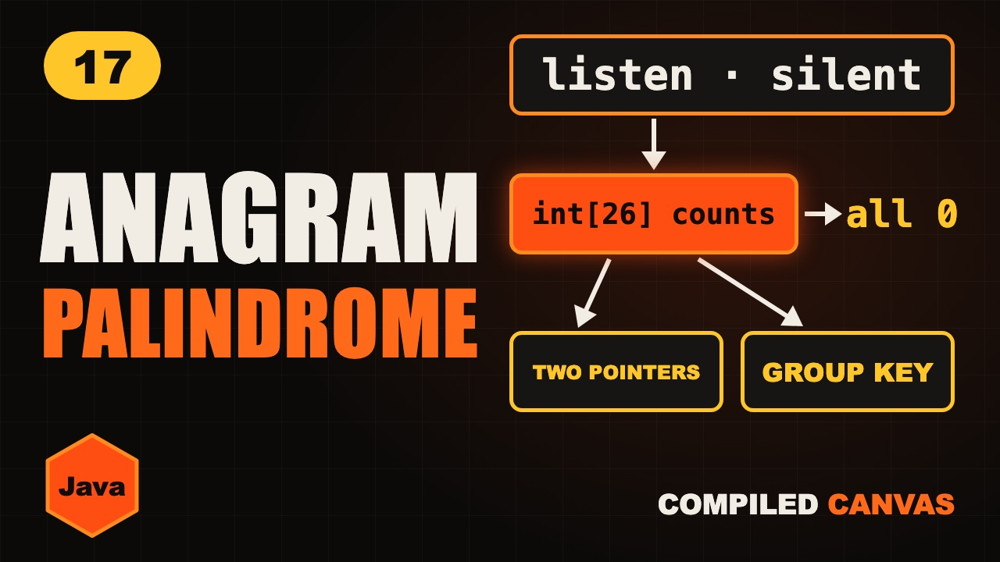

Valid Palindrome and Valid Anagram in Java | Strings DSA

The video goes live on 17 Nov 2026 at 6:00 PM IST. The notes are ready now.
?What this episode covers
Two ideas show up in string interviews again and again: palindromes, which read the same from both ends, and anagrams, which use exactly the same letters. One simple tool cracks most of them: counting.
A palindrome check uses two pointers from both ends, skipping anything that isn't a letter or digit and ignoring case. That's LeetCode 125 in O(n) time and O(1) space.
The frequency array is an int[26], where ch - 'a' gives each letter's slot. Two words are anagrams when adding for one and subtracting for the other leaves every count at zero. Group anagrams uses the sorted letters as a hash map key, and the first unique character is count first, then walk.
◎What you'll be able to do
- Palindromes, two pointers
- The frequency array
- Anagrams
- Group anagrams
- First unique character
{ }The Java code from the video
Type it out yourself, or copy it. Each file runs on its own with java FileName.java and prints the examples from the video.
import java.util.*;
// Episode 17: palindromes, anagrams and frequency counting. Run: java PalindromesAnagrams.java
public class PalindromesAnagrams {
// LeetCode 125: two pointers, skipping anything that isn't a letter or digit
static boolean isPalindrome(String s) {
int l = 0, r = s.length() - 1;
while (l < r) {
char a = Character.toLowerCase(s.charAt(l));
char b = Character.toLowerCase(s.charAt(r));
if (!Character.isLetterOrDigit(a)) l++;
else if (!Character.isLetterOrDigit(b)) r--;
else if (a != b) return false;
else { l++; r--; }
}
return true;
}
// LeetCode 242: +1 for s, -1 for t, then every count must be zero
static boolean isAnagram(String s, String t) {
if (s.length() != t.length()) return false;
int[] count = new int[26];
for (int i = 0; i < s.length(); i++) {
count[s.charAt(i) - 'a']++;
count[t.charAt(i) - 'a']--;
}
for (int c : count)
if (c != 0) return false;
return true;
}
// LeetCode 49: the sorted letters are the key
static List<List<String>> groupAnagrams(String[] strs) {
Map<String, List<String>> map = new HashMap<>();
for (String w : strs) {
char[] c = w.toCharArray();
Arrays.sort(c);
String key = new String(c);
map.computeIfAbsent(key, k -> new ArrayList<>()).add(w);
}
return new ArrayList<>(map.values());
}
// LeetCode 387: count, then walk again
static int firstUniqChar(String s) {
int[] count = new int[26];
for (char c : s.toCharArray()) count[c - 'a']++;
for (int i = 0; i < s.length(); i++)
if (count[s.charAt(i) - 'a'] == 1) return i;
return -1;
}
public static void main(String[] args) {
System.out.println(isPalindrome("A man, a plan, a canal: Panama")); // true
System.out.println(isPalindrome("rocket")); // false
System.out.println(isAnagram("listen", "silent")); // true
System.out.println(isAnagram("rat", "car")); // false
System.out.println(groupAnagrams(new String[]{"eat", "tea", "tan", "ate", "nat", "bat"}));
// three groups, in any order: [eat, tea, ate], [tan, nat], [bat]
System.out.println(firstUniqChar("loveleetcode")); // 2
}
}!The mistake to watch for
Forgetting to skip spaces and punctuation, or to ignore upper and lower case, in valid palindrome.
✦Key moments tap one to jump there
↗Full transcript
Read the whole lesson
Here are two words. Listen, and silent.
Same letters, different order. That's called an anagram.
And here's a word that reads the same backwards. Racecar. That's a palindrome.
These two ideas show up in interview after interview. And one simple tool cracks most of them: counting.
Welcome back to Compiled Canvas. This is Episode Seventeen of our DSA series. Last time, we learned String versus StringBuilder.
Here's the plan. First, palindromes with two pointers. Then the frequency array. Then anagrams. Then grouping anagrams with a hash map. And the first unique character. A cheat sheet. And an easy quiz at the end.
Let's go.
The slow way to check a palindrome is to reverse the string and compare. That builds a whole new string.
The better way is two pointers. One at the start, one at the end.
R and r match. Move both inward. A and a match.
C and c match. Now the pointers meet in the middle. It's a palindrome.
If any pair doesn't match, stop right there. Rocket starts with r and ends with t. Not a palindrome.
LeetCode one twenty five is the real version. The sentence has spaces, commas and capital letters.
If the left character isn't a letter or a digit, skip it. Same on the right.
Compare the two letters in lower case. If they're different, it's not a palindrome.
Otherwise, move both pointers inward. It's O of n time and O of one space.
Now the tool behind half of all string questions. The frequency array.
Make an array of twenty six counts, one slot for each letter, from a to z.
For each letter, add one to its slot. Char minus a gives the slot. B minus a is one.
Count the word banana. A is three, b is one, and n is two.
It's one pass, so O of n. And the array is always twenty six long, so the extra space is O of one.
Two words are anagrams if they have exactly the same counts.
The slow way is to sort both words and compare. Sorting costs O of n log n.
The fast way uses one array. Add one for each letter of the first word, and take one away for each letter of the second.
If every count comes back to zero, they're anagrams. Listen and silent end with all zeros.
Rat and car? The t is left at plus one, and the c at minus one. Not anagrams.
Here's LeetCode two forty two. Different lengths? They can't be anagrams.
One loop adds for s and subtracts for t, at the same time.
Then check that every count is zero. O of n time, O of one space.
Quick pause, before we go further. If you're finding this video valuable, hit subscribe to Compiled Canvas, and turn on the bell. It's free, it takes one second, and it helps me keep making this complete DSA series for you. Alright, back to it.
Now a harder one. Group anagrams, LeetCode forty nine. Eat, tea, tan, ate, nat, bat.
We need a label that's the same for every anagram. Sort the letters. Eat, tea and ate all become a e t.
Use that label as the key in a hash map. Each key holds a list of words.
So we get three groups. Eat, tea and ate. Tan and nat. And bat on its own.
In Java, turn the word into a char array and sort it. That's the key.
Compute if absent makes a new list the first time we see a key. Then we add the word.
For n words of length k, it's O of n times k log k.
One more classic. Find the first letter that appears only once. LeetCode three eighty seven.
Two passes. First, count every letter. Second, walk again and return the first letter whose count is one.
In love leet code, l and o appear twice. V appears once. So the answer is index two.
Your turn. Pause. Are night and thing anagrams?
Yes. Same letters, same counts. Every slot ends at zero.
So, here's the whole thing in one cheat sheet. Pause and screenshot this.
Palindrome: two pointers from both ends.
Skip anything that isn't a letter or digit.
Frequency array: twenty six slots.
Char minus a gives the slot.
Anagram: plus one, minus one, all zero.
Group anagrams: sorted letters as the key.
First unique: count, then walk.
Okay, quiz time. Three easy questions. Pause the video, think, and then hit play.
Question one. What is c minus a?
Question two. Are rat and tar anagrams?
Question three. In group anagrams, what do we use as the key?
Ready?
Question one: Two. C sits two places after a.
Question two: Yes. Same letters, same counts.
Question three: The sorted letters of the word.
How many did you get right? Tell me in the comments: three out of three, two, or one.
Let's recap. Palindromes use two pointers. Count letters with an array of twenty six. Anagrams end with every count at zero. Group anagrams by their sorted letters. Count first, then walk.
Your homework. Solve LeetCode one twenty five, valid palindrome. Then try two forty two, valid anagram. And then forty nine, group anagrams. Hints and Java answers are on compiled canvas dot com.
Next episode, pattern matching. The KMP algorithm, and how it never walks backwards in the text.
And don't forget to subscribe to Compiled Canvas, so you don't miss anything new in tech and the job market. Keep coding, stay consistent, and I'll see you in the next one.